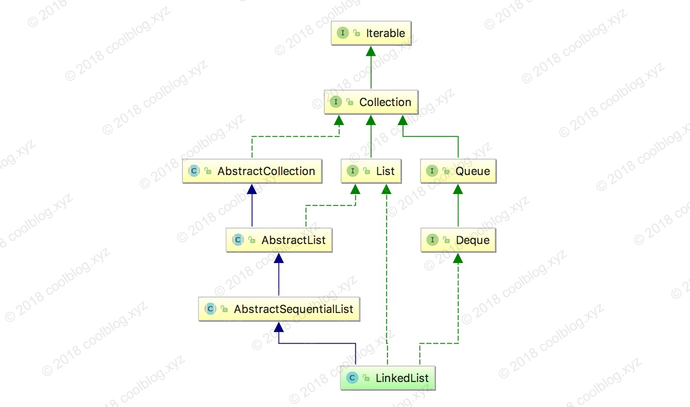
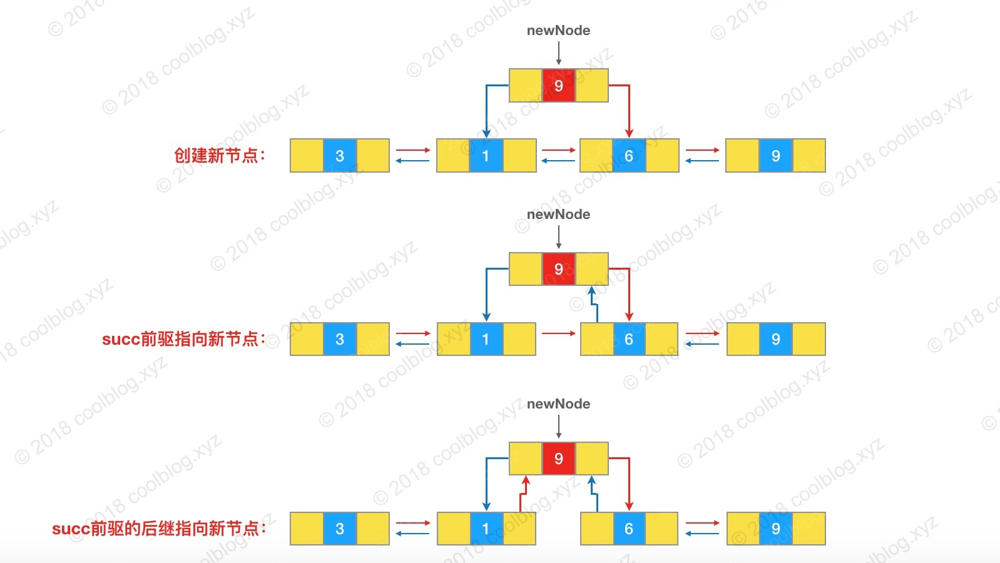
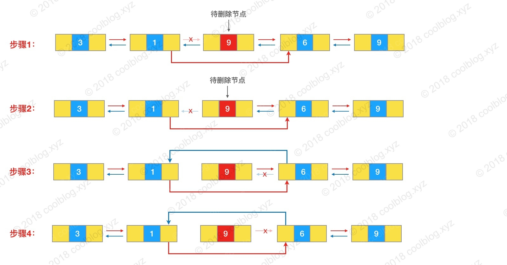

1.概述
LinkedList是 Java 集合框架中一个重要的实现，其底层采用的双向链表结构。和 ArrayList 一样，LinkedList也支持空值和重复值。由于LinkedList基于链表实现，存储元素过程中，无需像 ArrayList 那样进行扩容。但有得必有失，LinkedList存储元素的节点需要额外的空间存储前驱和后继的引用。另一方面，LinkedList在链表头部和尾部插入效率比较高，但在指定位置进行插入时，效率一般。原因是，在指定位置插入需要定位到该位置处的节点，此操作的时间复杂度为O(N)。最后，LinkedList是非线程安全的集合类，并发环境下，多个线程同时操作 LinkedList，会引发不可预知的错误。
以上是对LinkedList的简单介绍，接下来，我将会对LinkedList常用操作展开分析，继续往下看吧。
2.继承体系
2.1 LinkedList属性
LinkedList本身的 的属性比较少，主要有三个，一个是size，表名当前有多少个节点；一个是first代表第一个节点；一个是last代表最后一个节点。1
2
3
4
5
6
7
8
9
10
11public class LinkedList<E>
extends AbstractSequentialList<E>
implements List<E>, Deque<E>, Cloneable, java.io.Serializable{
//当前有多少个节点
transient int size = 0;
//第一个节点
transient Node<E> first;
//最后一个节点
transient Node<E> last;
//省略内部类和方法。。
}
LinkedList的继承体系较为复杂，继承自 AbstractSequentialList，同时又实现了 List 和 Deque 接口。继承体系图如下（删除了部分实现的接口）：
LinkedList继承自 AbstractSequentialList，AbstractSequentialList 又是什么呢？从实现上，AbstractSequentialList 提供了一套基于顺序访问的接口。通过继承此类，子类仅需实现部分代码即可拥有完整的一套访问某种序列表（比如链表）的接口。深入源码，AbstractSequentialList 提供的方法基本上都是通过 ListIterator 实现的，比如：1
2
3
4
5
6
7
8
9
10
11
12
13
14
15
16
17
18public E get(int index) {
try {
return listIterator(index).next();
} catch (NoSuchElementException exc) {
throw new IndexOutOfBoundsException("Index: "+index);
}
}
public void add(int index, E element) {
try {
listIterator(index).add(element);
} catch (NoSuchElementException exc) {
throw new IndexOutOfBoundsException("Index: "+index);
}
}
// 留给子类实现
public abstract ListIterator<E> listIterator(int index);
所以只要继承类实现了 listIterator 方法，它不需要再额外实现什么即可使用。对于随机访问集合类一般建议继承 AbstractList 而不是 AbstractSequentialList。LinkedList和其父类一样，也是基于顺序访问。所以LinkedList继承了 AbstractSequentialList，但LinkedList并没有直接使用父类的方法，而是重新实现了一套的方法。
另外，LinkedList还实现了 Deque (double ended queue)，Deque 又继承自 Queue 接口。这样LinkedList就具备了队列的功能。比如，我们可以这样使用：
1 | Queue<T> queue = new LinkedList<>(); |
除此之外，我们基于LinkedList还可以实现一些其他的数据结构，比如栈，以此来替换 Java 集合框架中的 Stack 类（该类实现的不好，《Java 编程思想》一书的作者也对此类进行了吐槽）。
关于LinkedList继承体系先说到这，下面进入源码分析部分。
3.源码分析
3.1 查找
LinkedList底层基于链表结构，无法向 ArrayList 那样随机访问指定位置的元素。LinkedList查找过程要稍麻烦一些，需要从链表头结点（或尾节点）向后查找，时间复杂度为 O(N)。相关源码如下：1
2
3
4
5
6
7
8
9
10
11
12
13
14
15
16
17
18
19
20
21
22
23public E get(int index) {
checkElementIndex(index);
return node(index).item;
}
Node<E> node(int index) {
/*
* 则从头节点开始查找，否则从尾节点查找
* 查找位置 index 如果小于节点数量的一半，
*/
if (index < (size >> 1)) {
Node<E> x = first;
// 循环向后查找，直至 i == index
for (int i = 0; i < index; i++)
x = x.next;
return x;
} else {
Node<E> x = last;
for (int i = size - 1; i > index; i--)
x = x.prev;
return x;
}
}
上面的代码比较简单，主要是通过遍历的方式定位目标位置的节点。获取到节点后，取出节点存储的值返回即可。这里面有个小优化，即通过比较 index 与节点数量 size/2 的大小，决定从头结点还是尾节点进行查找。查找操作的代码没什么复杂的地方，这里先讲到这里。
3.2 遍历
链表的遍历过程也很简单，和上面查找过程类似，我们从头节点往后遍历就行了。但对于LinkedList的遍历还是需要注意一些，不然可能会导致代码效率低下。通常情况下，我们会使用 foreach 遍历 LinkedList，而 foreach 最终转换成迭代器形式。所以分析LinkedList的遍历的核心就是它的迭代器实现，相关代码如下：1
2
3
4
5
6
7
8
9
10
11
12
13
14
15
16
17
18
19
20
21
22
23
24
25
26
27
28
29
30
31
32
33
34
35public ListIterator<E> listIterator(int index) {
checkPositionIndex(index);
return new ListItr(index);
}
private class ListItr implements ListIterator<E> {
private Node<E> lastReturned;
private Node<E> next;
private int nextIndex;
private int expectedModCount = modCount;
/** 构造方法将 next 引用指向指定位置的节点 */
ListItr(int index) {
// assert isPositionIndex(index);
next = (index == size) ? null : node(index);
nextIndex = index;
}
public boolean hasNext() {
return nextIndex < size;
}
public E next() {
checkForComodification();
if (!hasNext())
throw new NoSuchElementException();
lastReturned = next;
next = next.next; // 调用 next 方法后，next 引用都会指向他的后继节点
nextIndex++;
return lastReturned.item;
}
// 省略部分方法
}
上面的方法很简单，大家应该都能很快看懂，这里就不多说了。下面来说说遍历LinkedList需要注意的一个点。
我们都知道LinkedList不擅长随机位置访问，如果大家用随机访问的方式遍历 LinkedList，效率会很差。比如下面的代码：1
2
3
4
5
6
7
8List<Integet> list = new LinkedList<>();
list.add(1)
list.add(2)
......
for (int i = 0; i < list.size(); i++) {
Integet item = list.get(i);
// do something
}
当链表中存储的元素很多时，上面的遍历方式对于效率来说就是灾难。原因在于，通过上面的方式每获取一个元素，LinkedList都需要从头节点（或尾节点）进行遍历，效率不可谓不低。在我的电脑（MacBook Pro Early 2015, 2.7 GHz Intel Core i5）实测10万级的数据量，耗时约7秒钟。20万级的数据量耗时达到了约34秒的时间。50万级的数据量耗时约250秒。从测试结果上来看，上面的遍历方式在大数据量情况下，效率很差。大家在日常开发中应该尽量避免这种用法。
3.3 插入
LinkedList除了实现了 List 接口相关方法，还实现了 Deque 接口的很多方法，所以我们有很多种方式插入元素。但这里，我只打算分析 List 接口中相关的插入方法，其他的方法大家自己看吧。LinkedList插入元素的过程实际上就是链表链入节点的过程，学过数据结构的同学对此应该都很熟悉了。这里简单分析一下，先看源码吧：1
2
3
4
5
6
7
8
9
10
11
12
13
14
15
16
17
18
19
20
21
22
23
24
25
26
27
28
29
30
31
32
33
34
35
36
37
38
39
40
41
42
43
44
45
46
47
48
49/** 在链表尾部插入元素 */
public boolean add(E e) {
linkLast(e);
return true;
}
/** 在链表指定位置插入元素 */
public void add(int index, E element) {
checkPositionIndex(index);
// 判断 index 是不是链表尾部位置，如果是，直接将元素节点插入链表尾部即可
if (index == size)
linkLast(element);
else
linkBefore(element, node(index));
}
/** 将元素节点插入到链表尾部 */
void linkLast(E e) {
final Node<E> l = last;
// 创建节点，并指定节点前驱为链表尾节点 last，后继引用为空
final Node<E> newNode = new Node<>(l, e, null);
// 将 last 引用指向新节点
last = newNode;
// 判断尾节点是否为空，为空表示当前链表还没有节点
if (l == null)
first = newNode;
else
l.next = newNode; // 让原尾节点后继引用 next 指向新的尾节点
size++;
modCount++;
}
/** 将元素节点插入到 succ 之前的位置 */
void linkBefore(E e, Node<E> succ) {
// assert succ != null;
final Node<E> pred = succ.prev;
// 1. 初始化节点，并指明前驱和后继节点
final Node<E> newNode = new Node<>(pred, e, succ);
// 2. 将 succ 节点前驱引用 prev 指向新节点
succ.prev = newNode;
// 判断尾节点是否为空，为空表示当前链表还没有节点
if (pred == null)
first = newNode;
else
pred.next = newNode; // 3. succ 节点前驱的后继引用指向新节点
size++;
modCount++;
}
上面是插入过程的源码，我对源码进行了比较详细的注释，应该不难看懂。上面两个 add 方法只是对操作链表的方法做了一层包装，核心逻辑在 linkBefore 和 linkLast 中。这里以 linkBefore 为例，它的逻辑流程如下：
- 1.创建新节点，并指明新节点的前驱和后继
- 2.将 succ 的前驱引用指向新节点
- 3.如果 succ 的前驱不为空，则将 succ 前驱的后继引用指向新节点
对应于下图：

以上就是插入相关的源码分析，并不复杂，就不多说了。继续往下分析。
3.4 删除
如果大家看懂了上面的插入源码分析，那么再看删除操作实际上也很简单了。删除操作通过解除待删除节点与前后节点的链接，即可完成任务。过程比较简单，看源码吧：1
2
3
4
5
6
7
8
9
10
11
12
13
14
15
16
17
18
19
20
21
22
23
24
25
26
27
28
29
30
31
32
33
34
35
36
37
38
39
40
41
42
43
44
45
46
47
48
49
50
51
52
53
54
55
56
57
58
59public boolean remove(Object o) {
if (o == null) {
for (Node<E> x = first; x != null; x = x.next) {
if (x.item == null) {
unlink(x);
return true;
}
}
} else {
// 遍历链表，找到要删除的节点
for (Node<E> x = first; x != null; x = x.next) {
if (o.equals(x.item)) {
unlink(x); // 将节点从链表中移除
return true;
}
}
}
return false;
}
public E remove(int index) {
checkElementIndex(index);
// 通过 node 方法定位节点，并调用 unlink 将节点从链表中移除
return unlink(node(index));
}
/** 将某个节点从链表中移除 */
E unlink(Node<E> x) {
// assert x != null;
final E element = x.item;
final Node<E> next = x.next;
final Node<E> prev = x.prev;
// prev 为空，表明删除的是头节点
if (prev == null) {
first = next;
} else {
// 将 x 的前驱的后继指向 x 的后继
prev.next = next;
// 将 x 的前驱引用置空，断开与前驱的链接
x.prev = null;
}
// next 为空，表明删除的是尾节点
if (next == null) {
last = prev;
} else {
// 将 x 的后继的前驱指向 x 的前驱
next.prev = prev;
// 将 x 的后继引用置空，断开与后继的链接
x.next = null;
}
// 将 item 置空，方便 GC 回收
x.item = null;
size--;
modCount++;
return element;
}
和插入操作一样，删除操作方法也是对底层方法的一层保证，核心逻辑在底层 unlink 方法中。所以长驱直入，直接分析 unlink 方法吧。unlink 方法的逻辑如下（假设删除的节点既不是头节点，也不是尾节点）：
- 1.将待删除节点 x 的前驱的后继指向 x 的后继
- 2.将待删除节点 x 的前驱引用置空，断开与前驱的链接
- 3.将待删除节点 x 的后继的前驱指向 x 的前驱
- 4.将待删除节点 x 的后继引用置空，断开与后继的链接
对应下图：

结合上图，理解LinkedList删除操作应该不难。好了，LinkedList的删除源码分析就讲到这。
4.总结
通过上面的分析，大家对LinkedList的底层实现应该很清楚了。总体来看LinkedList的源码并不复杂，大家耐心看一下，一般都能看懂。同时，通过本文，向大家展现了使用LinkedList的一个坑，希望大家在开发中尽量避免。下面是对LinkedList总结